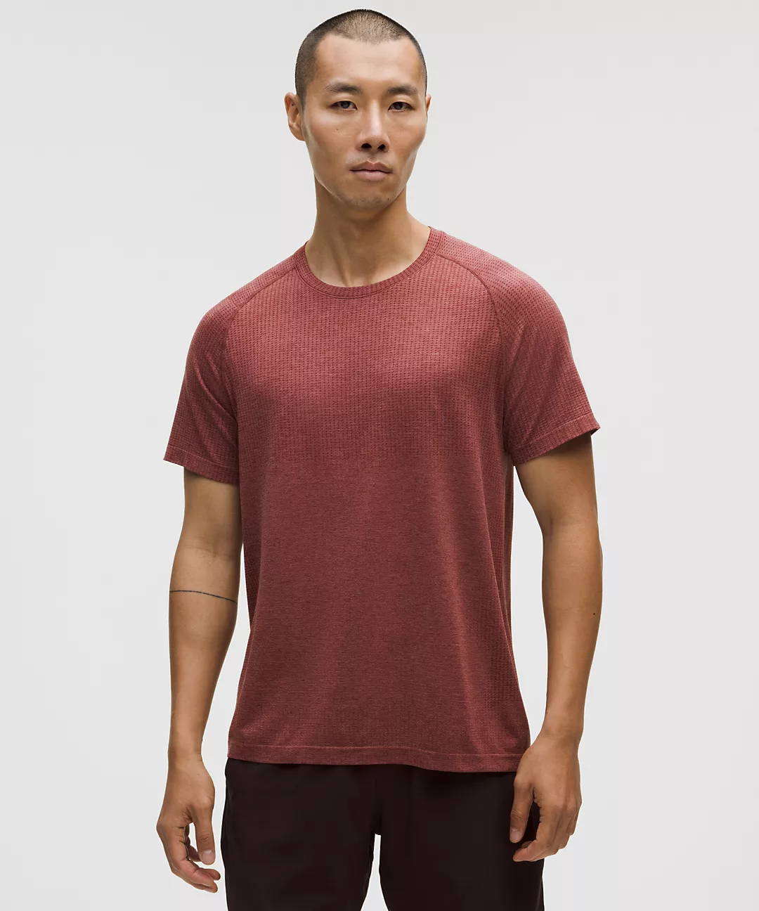
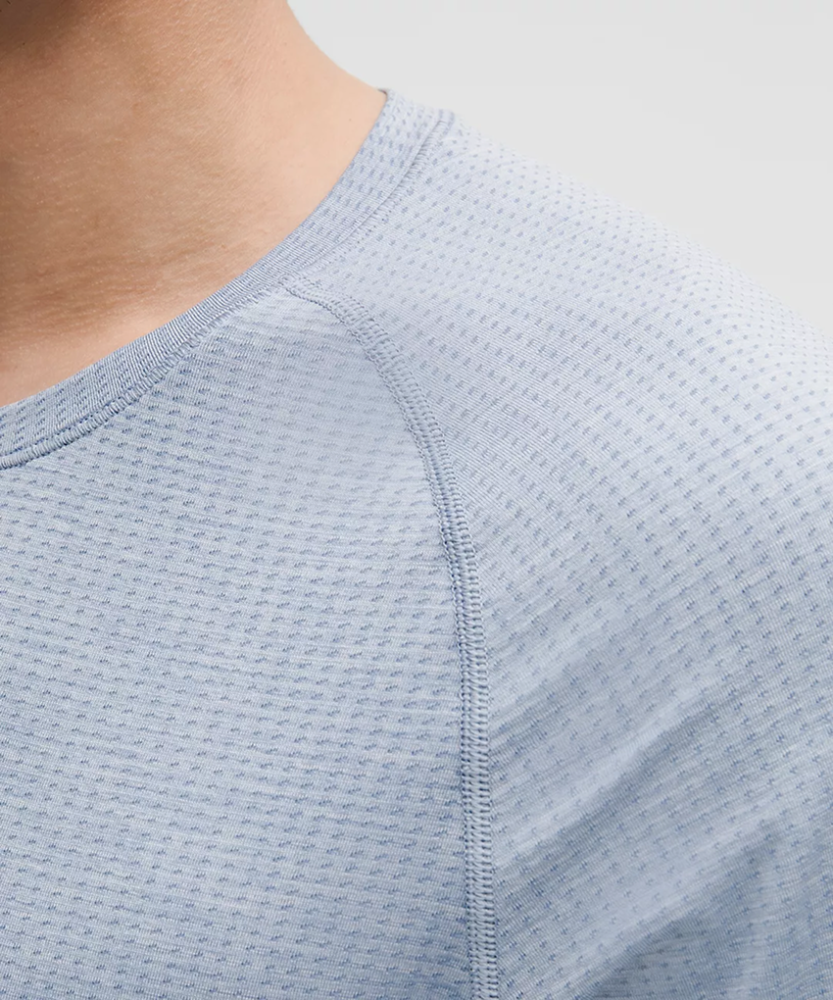
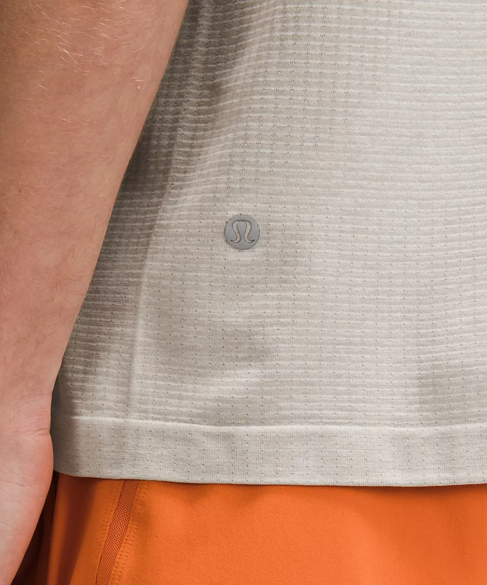

Lululemon: Metal Vent Tech Short-Sleeve Shirt

What makes it special? Comfort, durability and style.
Most comfortable t-shirt I've used: I've run 3 marathons with them and train with them every day. Have been washed 50+ and look like new. Multiple colors to choose from, from basics to seasonal additions.

